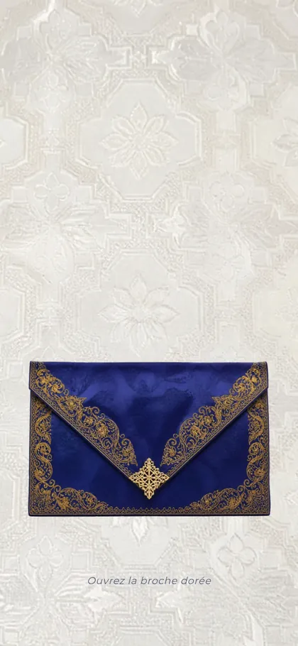
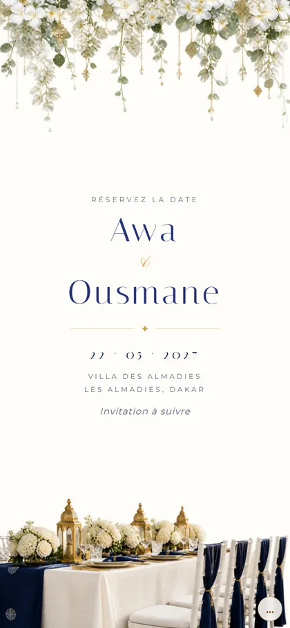
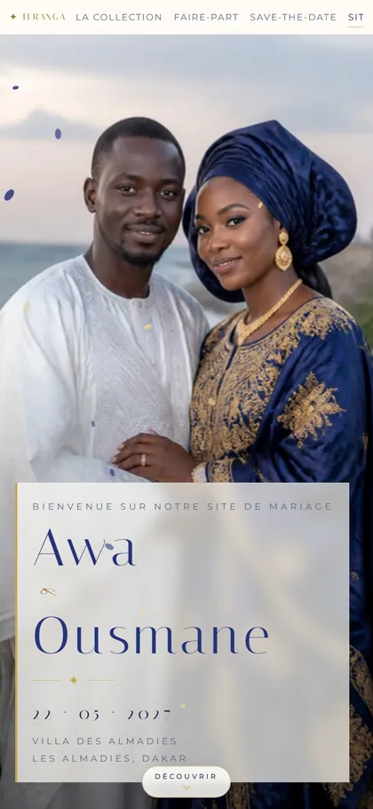
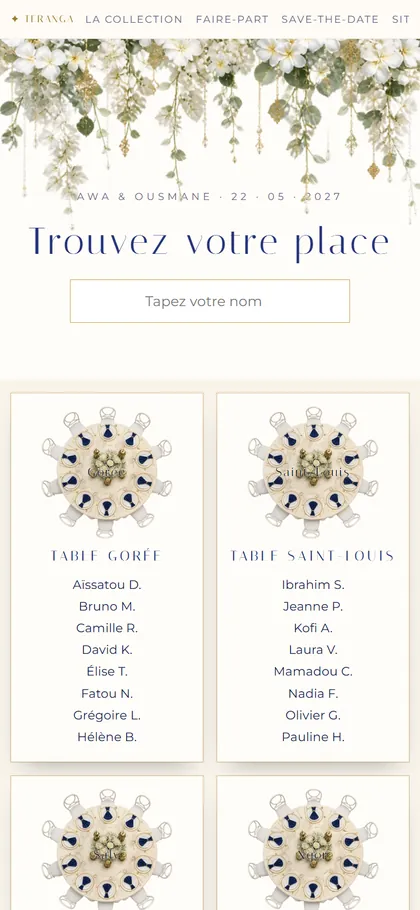
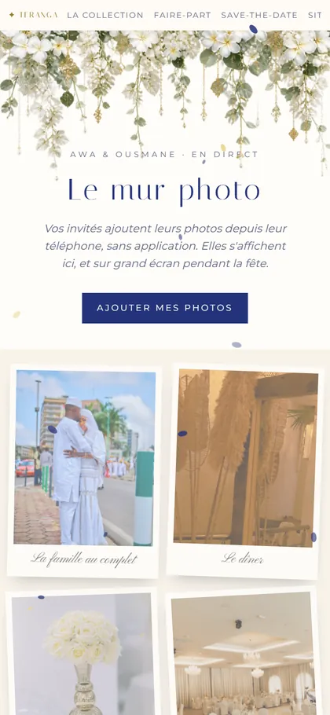
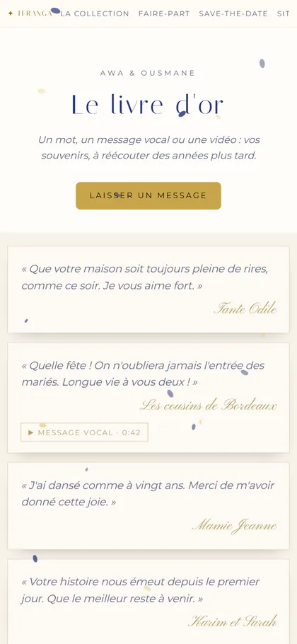

Faire-partL'enveloppe s'ouvre, la carte apparaît
Save-the-datePour réserver la date
Site du mariageProgramme, lieu, hébergement, réponse
Plan de tableChacun trouve sa place
Mur photoLes photos des invités, en direct
Livre d'orMots, voix et vidéos